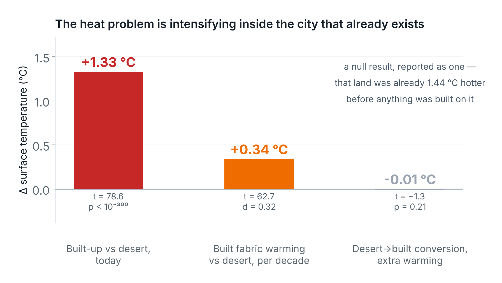
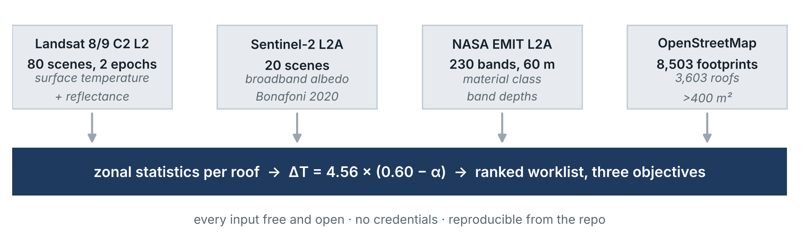
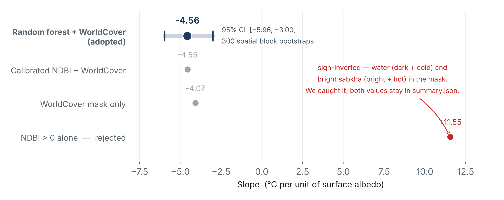
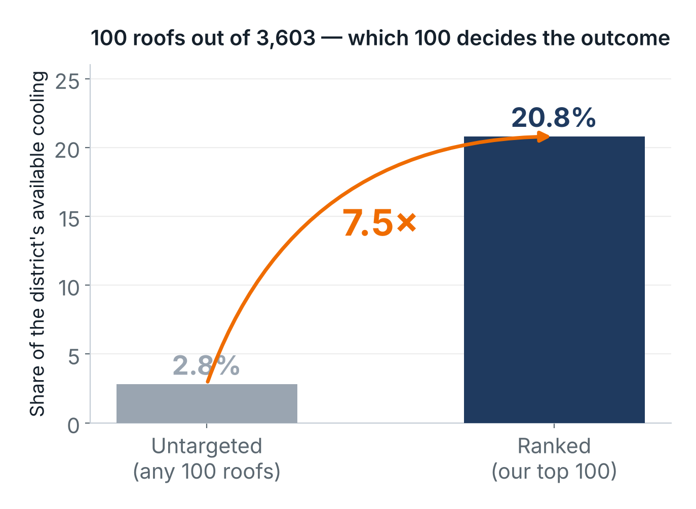
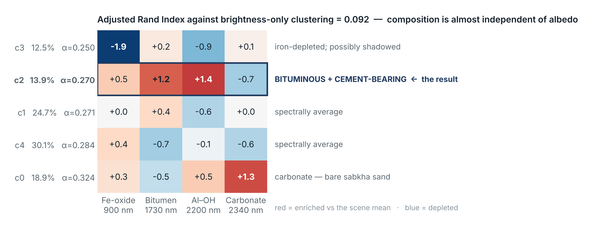
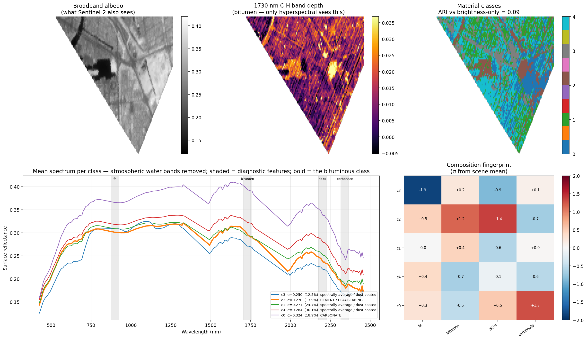
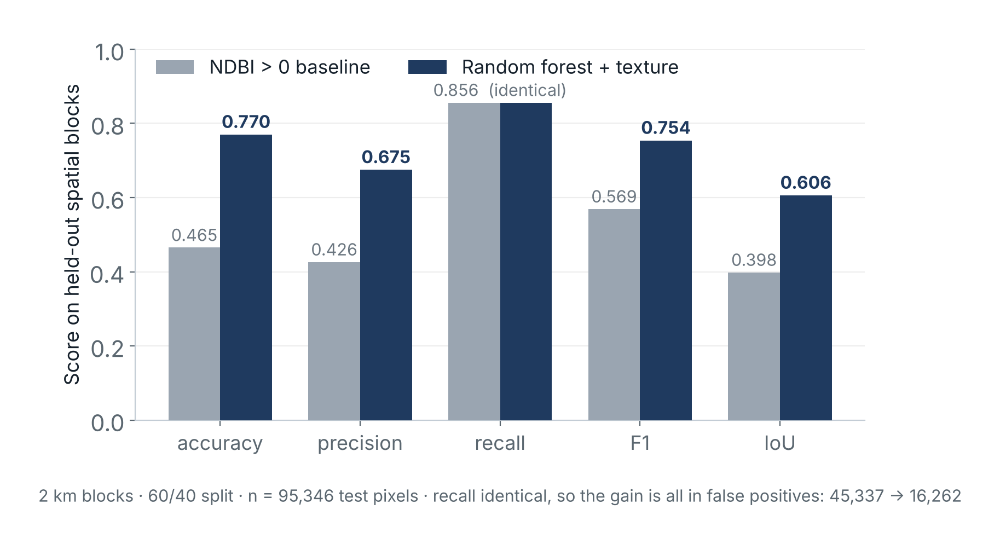

Replace bare desert with asphalt, concrete and dark roofing and albedo falls, shortwave absorption rises, evaporative cooling disappears, and stored heat re-radiates at night. A decade of Landsat over Mussafah measures all three effects.

Cool-roof coating is among the cheapest interventions available — but coating every roof in an industrial district is not affordable, and coating the wrong ones wastes the budget.
City-scale urban heat island maps from consultants, plus manual site survey. Those maps show where it is hot.
Which roof to treat first. How much cooling the treatment buys. Whether that roof can be coated at all. The step from map to works programme is taken on judgement.
| Who owns the roof | Municipality's lever | What the ranking is used for |
|---|---|---|
| ADM municipal buildings | Direct capital works | Sequencing its own retrofit programme against budget |
| Other government entities | Inter-entity coordination | Showing an entity its own stock, ranked, with the evidence |
| Private industrial landlords most of Mussafah's roof area | Regulation, permit conditions, incentives — not direct spending | Targeting where a code change buys the most cooling per unit of regulatory effort. A blanket requirement is politically expensive; one aimed at the 2.8% of roofs carrying 21% of the cooling is defensible. |
Procurement reality in Abu Dhabi favours consultancy studies on a multi-year cycle over recurring software. A three-to-four-year cadence also matches how fast the building stock and its surfaces actually change.
Ranked roof inventory as CSV + GIS layer, heat and material maps, and a prioritisation report — scoped to a district or to a single entity's portfolio.
Every 3–4 years, with the previous run as the baseline — so the second study also measures what the first one achieved.
Every input is free and open: Landsat, Sentinel-2, EMIT, OpenStreetMap. Essentially all cost is analyst time, which is why this is viable at district scale where a field survey of 3,603 roofs never would be.
ADM for its own stock. Other government entities for theirs. Large industrial landlords and free-zone operators for their portfolios.
Accessed through the Microsoft Planetary Computer STAC API, NASA Earthdata (CMR + LP DAAC) for EMIT, and the Overpass API for OpenStreetMap. Scene IDs, query windows and cloud thresholds are written to provenance.json on every run.
| Product | Provider | Dates | Scenes | Resolution | Licence |
|---|---|---|---|---|---|
| Landsat 8/9 C2 L2SP | USGS / NASA | 2014-05 → 2016-09 | 40 · cloud 0.0–0.3% | 30 m | Public domain |
| Landsat 8/9 C2 L2SP | USGS / NASA | 2024-05 → 2026-09 | 40 | 30 m | Public domain |
| Sentinel-2 L2A | ESA Copernicus | 2025-05 → 2026-09 | 20 | 10–20 m | Free and open |
| NASA EMIT L2A reflectance | NASA JPL / LP DAAC | 2026-05-20, 15:03 local | 1 granule | 60 m · 285 bands | Open |
| ESA WorldCover v200 | ESA | 2021 | tile N24E054 | 10 m | CC BY 4.0 |
| OpenStreetMap buildings | OSM contributors | 2026-10-07 | 8,503 raw footprints | vector | ODbL |
EMIT is an imaging spectrometer on the ISS whose science remit is arid-region surface mineralogy — which is exactly why 47 granules cover Mussafah, far better coverage than curated commercial hyperspectral archives. It crosses at 15:03 local, three hours later than Landsat, so it samples closer to peak surface temperature.
Both epochs use Landsat only. Mixing sensors across a decade introduces cross-calibration bias that is indistinguishable from the urban warming signal we are trying to measure.
Two Jupyter notebooks, start to finish, on a free Colab runtime. No GPU, no paid API, no manual step.

Landsat lwir11, scaled to kelvin, qa_pixel bit-masked for cloud, shadow, cirrus and fill. Summer composites, two epochs.
Random forest on 14 features including multi-scale texture, required to agree with ESA WorldCover. Validated on held-out 2 km spatial blocks.
Sentinel-2 narrow-to-broadband albedo (Bonafoni & Sekertekin 2020), regressed against temperature under spatial block cross-validation.
Zonal statistics per OSM footprint, ΔT = 4.56 × (0.60 − α), ranked under three objectives with EMIT material class attached.
Most cool-roof proposals quote a cooling figure from the literature — usually from a temperate city. We estimated it from Abu Dhabi's own surfaces, under spatial block cross-validation, and re-estimated it under three independent built-up classifications.

Zonal statistics over OpenStreetMap footprints larger than 400 m², each carrying albedo, surface temperature, area, predicted ΔT with bounds, and avoided solar absorption.

| Objective | Top-100 area | Mean LST | Avoided absorption |
|---|---|---|---|
| Total benefit area × cooling | 106.6 ha | 54.5 °C | 64.8 MW |
| Hottest roofs first | 47.7 ha | 56.5 °C | 26.9 MW |
| Biggest per-roof ΔT | 5.0 ha | 51.7 °C | 5.7 MW |
Avoided absorption is reduced shortwave load, not an air-conditioning saving, at an assumed summer daytime mean of S = 300 W/m².
Band depths against a local two-point continuum (Clark & Roush 1984) at four diagnostic features, then k-means on the depths standardised to the scene mean — so classes separate on composition, not brightness.


Never random pixel splits. Adjacent pixels in satellite imagery are not independent, so a random split leaks the test set into training and inflates every metric.

Our first mask (NDBI > 0 alone) gave +11.55 — brighter surfaces appearing hotter, inverting the physics. Cause: channel water (dark and cold) anchoring the low end, bright sabkha (bright and very hot) anchoring the high end. Requiring agreement with an independent land-cover product recovered the expected negative slope. Both values stay in summary.json — the audit trail is part of the evidence.
We estimate a marginal effect, not a prediction. Absolute surface temperature is driven mostly by factors we do not model — thermal mass, moisture, building use, HVAC exhaust. The coefficient on albedo is nonetheless tightly constrained: its entire 95% interval lies below zero and it is stable across independent spatial folds and three classification methods.
Land converted from desert to built-up did not warm more than desert left untouched (−0.01 °C, p = 0.21). Before any construction, that land was already 1.44 °C hotter than desert that stayed desert. Two explanations fit — siting (development hugs existing urban fabric) and site preparation (clearing removes the salt crust and shallow moisture of natural sabkha) — and we cannot separate them with the data we have.
Three of five classes — 67% of the imaged area — are spectrally average, no feature more than 0.7σ from the scene mean. Aeolian dust homogenises surface spectra in an arid industrial zone, so hyperspectral meaningfully differentiates roughly one third of the scene. Any operational hyperspectral urban product over Gulf cities, Satellite 813 included, will face the same constraint.
A rooftop sampling campaign on 20–30 roofs across the five spectral classes. Turns "consistent with bitumen" into a verified material call, and gives the first in-situ albedo measurements to check the synthesised values against.
Replace OpenStreetMap with ADM's own building layer. Removes the completeness gap and attaches ownership to every ranked roof — which is what routes each one to the right municipal lever.
A matched-control design pairing converted parcels with equidistant unconverted ones, plus construction-timing records, to separate siting from site preparation. Needed before anyone cites a conversion-warming figure.
The pipeline is the study and the study is repeatable. Run it again in 3–4 years and the same code measures what the first programme achieved.
| Member | Role |
|---|---|
| Meera Almansoori | Team lead · surface energy balance physics, methodology, validation design |
| Ghazi Hafedh | Data pipeline, modelling, software, repository |
| Ahmed Abu Farha | Municipal building-control domain input, end-user requirements |
Landsat Collection 2 Level-2 courtesy of the U.S. Geological Survey.
Contains modified Copernicus Sentinel-2 data (2025–2026).
EMIT data courtesy of NASA JPL, distributed by the LP DAAC.
© ESA WorldCover project 2021, CC BY 4.0.
Map data © OpenStreetMap contributors, Open Database Licence.
Bonafoni, S. & Sekertekin, A. (2020). Albedo
Retrieval From Sentinel-2 by New Narrow-to-Broadband Conversion Coefficients. IEEE GRSL.
Clark, R. N. & Roush, T. L. (1984). Reflectance
spectroscopy: quantitative analysis techniques for remote sensing applications. JGR Solid Earth.
USGS (2024). Landsat Collection 2
Level-2 Science Product Guide.
Starter notebooks and data-access patterns from the official 813 Challenge repository by Dr. Vincent Markiet, Space42.
Code licence: MIT.
No credentials, API keys or restricted imagery are committed to the repository.